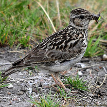
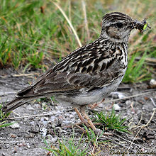

| Woodlark | |
|---|---|
|  | |
| Conservation status | |
| Binomial name | |
| Lullula arborea (Linnaeus, 1758) |
| Woodlark | |
|---|---|
|  | |
| Conservation status | |
| Binomial name | |
| Lullula arborea (Linnaeus, 1758) |
The Woodlark (Lullula arborea) is the only lark in the genus Lullula. It breeds across most of Europe, the Middle East Asia and the mountains of north Africa. It is mainly resident in the west of its range, but eastern populations of this passerine bird are more migratory, moving further south in winter. Even in the milder west of its range, many birds move south in winter.
This is a 13.5–15 cm long bird of open heath with some trees, and other open woodlands, especially those with pines and light soil. Its generic name derives from its sweet plaintive song, delivered in flight from heights of 100 m or more.
Like most other larks, this is an undistinguished-looking species on the ground, mainly brown above and pale below, but with distinctive white superciliar meeting on the nape. In flight it shows a short tail and short broad wings. The tail is tipped with white, but unlike the Skylark, the tail sides and the rear edge of the wings are not edged with white.
The nest is on the ground, with up to 6 eggs being laid. Food is seeds supplemented with insects in the breeding season.

de_Almeida.jpg){kind=link}